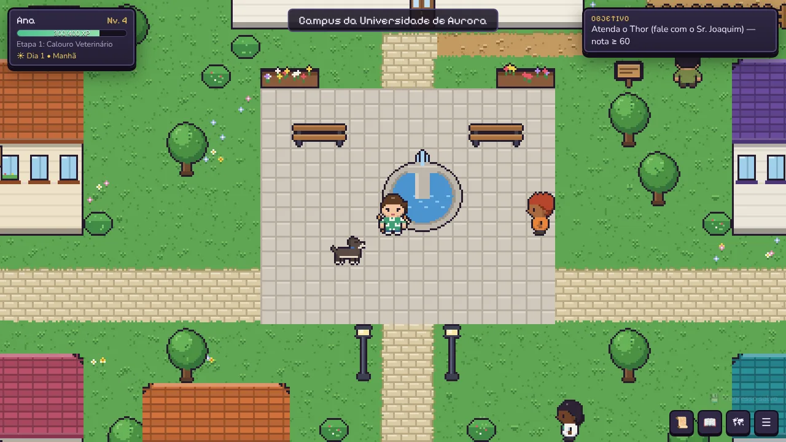
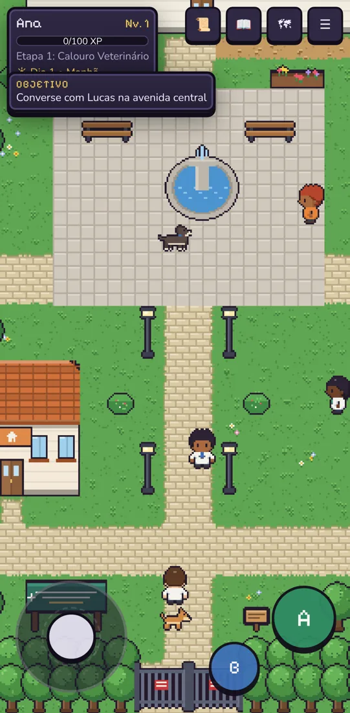
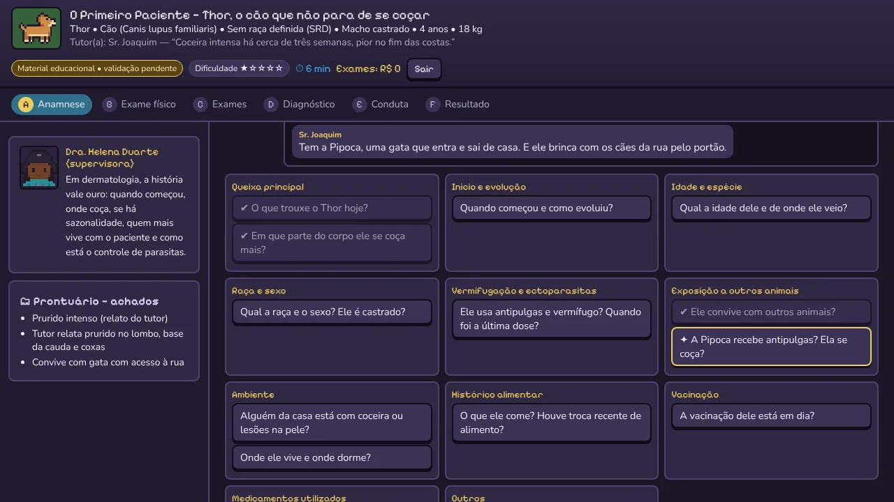
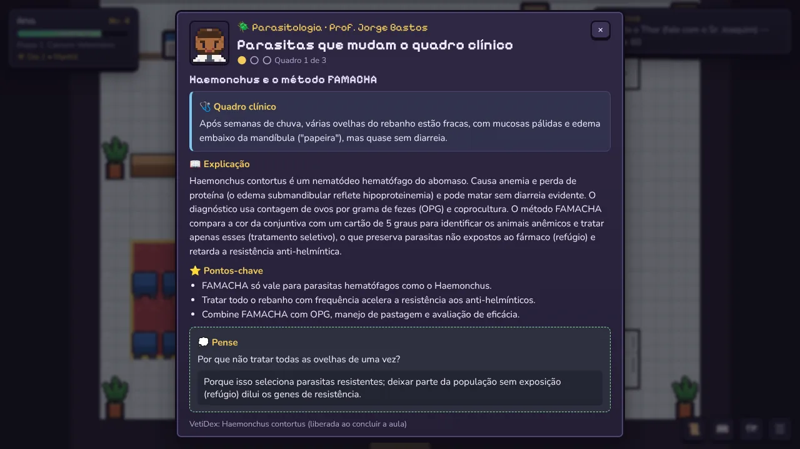
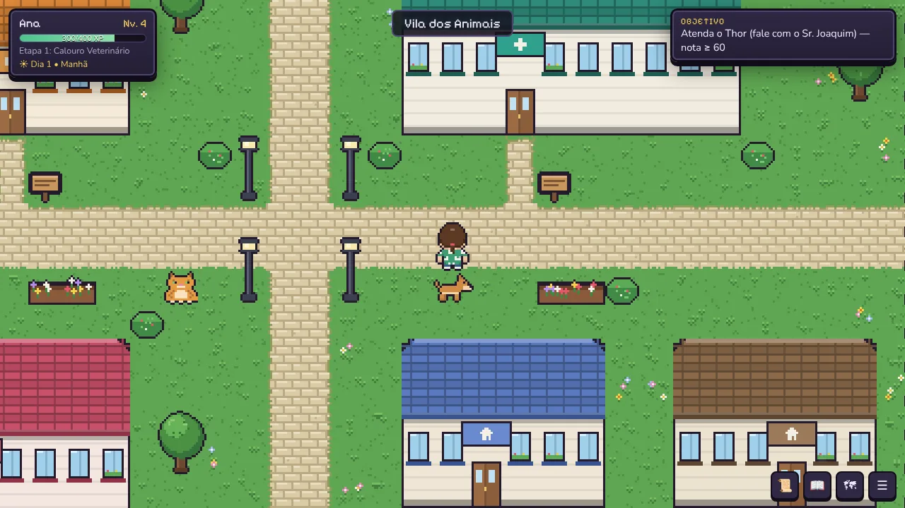
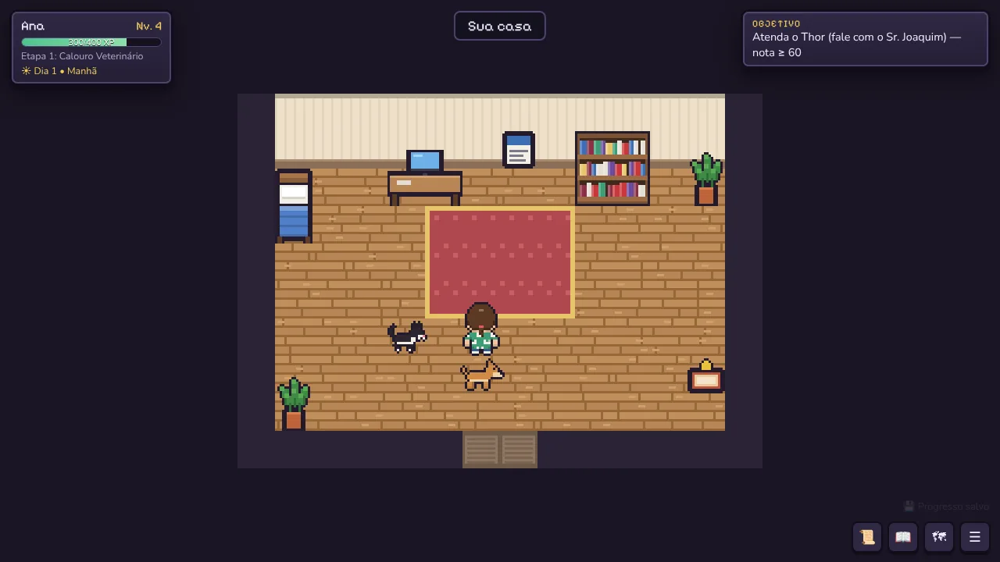

<title>Aurora Vet</title>
<meta name="claude:viewport-fit-sides" content="cover">
<link rel="preconnect" href="https://fonts.googleapis.com">
<link rel="preconnect" href="https://fonts.gstatic.com" crossorigin>
<link rel="stylesheet" href="https://fonts.googleapis.com/css2?family=Pixelify+Sans:wght@500;700&family=Nunito:wght@400;600;800&family=IBM+Plex+Mono:wght@500&display=swap">
<style>
/* Layout: prontuário veterinário — faixa de abertura com o jogo num "monitor" de pixels, seções como fichas de atendimento, etapas A–F como trilho. */
:root {
  --bg: #f2f6f1;
  --surface: #ffffff;
  --surface-2: #e7efe8;
  --ink: #221a33;
  --muted: #5d586e;
  --line: #d3ddd5;
  --accent: #23786a;
  --accent-ink: #ffffff;
  --accent-soft: #d5ebe4;
  --coral: #c8475a;
  --gold: #a87a12;
  --frame: #221a33;
  --font-display: "Pixelify Sans", "Trebuchet MS", system-ui, sans-serif;
  --font-body: "Nunito", "Segoe UI", system-ui, -apple-system, sans-serif;
  --font-data: "IBM Plex Mono", ui-monospace, "SFMono-Regular", Menlo, monospace;
  --r: 10px;
}
@media (prefers-color-scheme: dark) {
  :root:not([data-theme="light"]) {
    --bg: #17121f; --surface: #221b2e; --surface-2: #2b2339; --ink: #f1ecff; --muted: #aca4c4; --line: #3a3150;
    --accent: #4fc28f; --accent-ink: #0f241a; --accent-soft: #1f3a33; --coral: #ff7f8e; --gold: #f2cc5a; --frame: #0b0810;
    color-scheme: dark;
  }
}
:root[data-theme="dark"] {
  --bg: #17121f; --surface: #221b2e; --surface-2: #2b2339; --ink: #f1ecff; --muted: #aca4c4; --line: #3a3150;
  --accent: #4fc28f; --accent-ink: #0f241a; --accent-soft: #1f3a33; --coral: #ff7f8e; --gold: #f2cc5a; --frame: #0b0810;
  color-scheme: dark;
}
* { box-sizing: border-box; }
html { scroll-behavior: smooth; }
@media (prefers-reduced-motion: reduce) { html { scroll-behavior: auto; } * { animation: none !important; transition: none !important; } }
body { background: var(--bg); color: var(--ink); font: 400 1rem/1.6 var(--font-body); }
body::before { content: ""; position: fixed; inset: 0 0 auto; height: env(safe-area-inset-top, 0px); z-index: 10; background: var(--surface); }
.wrap { max-width: 1120px; margin: 0 auto; padding-left: max(16px, env(safe-area-inset-left, 0px)); padding-right: max(16px, env(safe-area-inset-right, 0px)); }
h1, h2, h3 { font-family: var(--font-display); font-weight: 700; line-height: 1.15; text-wrap: balance; margin: 0; }
h2 { font-size: clamp(1.6rem, 3.2vw, 2.2rem); }
h3 { font-size: 1.15rem; }
p { margin: 0; }
a { color: var(--accent); }
.label { font-family: var(--font-data); font-size: 0.74rem; letter-spacing: 0.08em; text-transform: uppercase; color: var(--muted); }
:focus-visible { outline: 3px solid var(--gold); outline-offset: 3px; border-radius: 4px; }

/* topo */
.top { position: sticky; top: env(safe-area-inset-top, 0px); z-index: 9; background: var(--surface); border-bottom: 1px solid var(--line); }
.top .wrap { display: flex; align-items: center; gap: 16px; padding-block: 10px; }
.brand { display: flex; align-items: center; gap: 10px; text-decoration: none; color: var(--ink); font-family: var(--font-display); font-size: 1.3rem; font-weight: 700; }
.cross { width: 30px; height: 30px; display: grid; place-items: center; background: var(--accent); color: var(--accent-ink); border-radius: 6px; font-size: 1.1rem; box-shadow: inset 0 -3px 0 rgba(0,0,0,0.18); }
.top nav { display: flex; gap: 18px; margin-left: auto; font-weight: 600; }
.top nav a { color: var(--muted); text-decoration: none; }
.top nav a:hover { color: var(--ink); }
@media (max-width: 720px) { .top nav { display: none; } .top .btn { margin-left: auto; } }

.btn { display: inline-flex; align-items: center; gap: 8px; padding: 10px 18px; border-radius: 8px; border: 2px solid var(--ink); font: 800 0.98rem var(--font-body); text-decoration: none; color: var(--ink); background: var(--surface); cursor: pointer; box-shadow: 0 3px 0 var(--ink); transition: transform 0.08s, box-shadow 0.08s; }
.btn:hover { transform: translateY(-1px); box-shadow: 0 4px 0 var(--ink); }
.btn:active { transform: translateY(2px); box-shadow: 0 1px 0 var(--ink); }
.btn.primary { background: var(--accent); color: var(--accent-ink); }
.btn.small { padding: 6px 12px; font-size: 0.88rem; }

/* abertura */
.hero { padding-block: 48px 40px; }
.hero .wrap { display: grid; grid-template-columns: minmax(0, 1fr) minmax(0, 1.15fr); gap: 44px; align-items: center; }
@media (max-width: 880px) { .hero .wrap { grid-template-columns: minmax(0, 1fr); gap: 28px; } }
.hero h1 { font-size: clamp(2.4rem, 5.6vw, 3.9rem); letter-spacing: 0.01em; }
.hero h1 span { color: var(--accent); display: block; font-size: 0.5em; margin-top: 6px; }
.hero .lead { font-size: 1.12rem; color: var(--muted); max-width: 34em; margin-top: 16px; }
.hero .ctas { display: flex; gap: 12px; flex-wrap: wrap; margin-top: 24px; }
.chips { display: flex; flex-wrap: wrap; gap: 8px; margin-top: 18px; }
.chip { font-family: var(--font-data); font-size: 0.74rem; padding: 4px 10px; border-radius: 99px; background: var(--accent-soft); color: var(--ink); }
.chip.test { background: transparent; border: 1px dashed var(--coral); color: var(--coral); }

.monitor { position: relative; background: var(--frame); padding: 12px; border-radius: 6px; box-shadow: 0 0 0 4px var(--frame), 0 0 0 8px var(--line), 0 18px 0 -2px var(--line); }
.monitor img { display: block; width: 100%; height: auto; aspect-ratio: 16 / 9; object-fit: cover; image-rendering: auto; border-radius: 2px; }
.monitor .phone { position: absolute; width: 22%; right: -14px; bottom: -34px; border: 6px solid var(--frame); border-radius: 14px; box-shadow: 0 0 0 3px var(--line); background: var(--frame); }
.monitor .phone img { aspect-ratio: auto; border-radius: 6px; }
@media (max-width: 880px) { .monitor .phone { right: 6px; bottom: -24px; width: 24%; } }

/* trilho A–F */
.rail { background: var(--surface); border-block: 1px solid var(--line); }
.rail .wrap { padding-block: 22px; display: grid; grid-template-columns: auto minmax(0, 1fr); gap: 20px; align-items: center; }
@media (max-width: 720px) { .rail .wrap { grid-template-columns: minmax(0, 1fr); } }
.steps { display: grid; grid-template-columns: repeat(6, minmax(0, 1fr)); gap: 8px; list-style: none; margin: 0; padding: 0; }
@media (max-width: 720px) { .steps { grid-template-columns: repeat(3, minmax(0, 1fr)); } }
.steps li { display: flex; align-items: center; gap: 8px; font-weight: 600; font-size: 0.92rem; min-width: 0; }
.steps b { flex: 0 0 auto; width: 28px; height: 28px; display: grid; place-items: center; border-radius: 50%; background: var(--accent); color: var(--accent-ink); font-family: var(--font-display); }

section.block { padding-block: 56px; }
.head { display: grid; gap: 8px; max-width: 40em; margin-bottom: 28px; }
.head p { color: var(--muted); }

/* recursos */
.features { display: grid; grid-template-columns: repeat(2, minmax(0, 1fr)); gap: 28px; }
@media (max-width: 760px) { .features { grid-template-columns: minmax(0, 1fr); } }
.feature { display: grid; gap: 12px; min-width: 0; }
.feature figure { margin: 0; border: 3px solid var(--frame); border-radius: 6px; overflow: hidden; background: var(--frame); }
.feature img { display: block; width: 100%; height: auto; aspect-ratio: 16 / 9; object-fit: cover; }
.feature p { color: var(--muted); }

/* números */
.numbers { display: grid; grid-template-columns: repeat(6, minmax(0, 1fr)); gap: 12px; margin-top: 36px; }
@media (max-width: 880px) { .numbers { grid-template-columns: repeat(3, minmax(0, 1fr)); } }
.num { background: var(--surface); border: 1px solid var(--line); border-radius: var(--r); padding: 14px; min-width: 0; }
.num strong { display: block; font: 700 1.9rem/1 var(--font-display); color: var(--accent); font-variant-numeric: tabular-nums; }
.num span { font-size: 0.86rem; color: var(--muted); }

/* como testar */
.alt { background: var(--surface-2); }
.guide { display: grid; grid-template-columns: minmax(0, 1.2fr) minmax(0, 1fr); gap: 32px; }
@media (max-width: 880px) { .guide { grid-template-columns: minmax(0, 1fr); } }
.route { list-style: none; margin: 0; padding: 0; display: grid; gap: 14px; counter-reset: r; }
.route li { display: grid; grid-template-columns: 36px minmax(0, 1fr); gap: 12px; counter-increment: r; }
.route li::before { content: counter(r); width: 36px; height: 36px; display: grid; place-items: center; background: var(--surface); border: 2px solid var(--ink); border-radius: 8px; font: 700 1.1rem var(--font-display); }
.route strong { display: block; }
.route span { color: var(--muted); font-size: 0.95rem; }
.card { background: var(--surface); border: 1px solid var(--line); border-radius: var(--r); padding: 18px; display: grid; gap: 12px; min-width: 0; }
.keys { width: 100%; border-collapse: collapse; font-size: 0.92rem; }
.keys th, .keys td { text-align: left; padding: 6px 4px; border-bottom: 1px solid var(--line); vertical-align: top; }
.keys th { font-weight: 600; color: var(--muted); }
kbd { font: 500 0.8rem var(--font-data); background: var(--surface-2); border: 1px solid var(--line); border-bottom-width: 2px; border-radius: 4px; padding: 1px 6px; }
.note { font-size: 0.9rem; color: var(--muted); border-left: 3px solid var(--gold); padding-left: 10px; }

/* feedback */
form { display: grid; gap: 16px; }
.grid2 { display: grid; grid-template-columns: repeat(2, minmax(0, 1fr)); gap: 16px; }
@media (max-width: 680px) { .grid2 { grid-template-columns: minmax(0, 1fr); } }
.field { display: grid; gap: 6px; min-width: 0; }
.field > label, .field legend { font-weight: 700; font-size: 0.95rem; }
fieldset { border: 0; padding: 0; margin: 0; min-width: 0; }
select, textarea, input[type="text"] { width: 100%; font: 400 1rem var(--font-body); color: var(--ink); background: var(--surface); border: 1.5px solid var(--line); border-radius: 8px; padding: 9px 10px; }
textarea { min-height: 84px; resize: vertical; }
.scale { display: flex; gap: 6px; flex-wrap: wrap; }
.scale label { position: relative; }
.scale input { position: absolute; opacity: 0; inset: 0; }
.scale span { display: grid; place-items: center; width: 44px; height: 40px; border: 1.5px solid var(--line); border-radius: 8px; background: var(--surface); font: 700 1rem var(--font-display); cursor: pointer; }
.scale input:checked + span { background: var(--accent); color: var(--accent-ink); border-color: var(--accent); }
.scale input:focus-visible + span { outline: 3px solid var(--gold); outline-offset: 2px; }
.scale-hint { font-size: 0.8rem; color: var(--muted); }
.form-actions { display: flex; gap: 12px; flex-wrap: wrap; align-items: center; }
#status { font-size: 0.92rem; color: var(--accent); font-weight: 700; }
#copyText { min-height: 160px; font: 0.82rem/1.45 var(--font-data); }

/* aviso e rodapé */
.warn { display: grid; grid-template-columns: auto minmax(0, 1fr); gap: 14px; align-items: start; background: var(--surface); border: 1.5px dashed var(--coral); border-radius: var(--r); padding: 18px; }
.warn .ico { font: 700 1.6rem var(--font-display); color: var(--coral); }
.warn p { color: var(--muted); }
footer { border-top: 1px solid var(--line); padding-block: 26px; color: var(--muted); font-size: 0.88rem; }
footer .wrap { display: flex; gap: 16px; flex-wrap: wrap; justify-content: space-between; }
</style>

<header class="top">
  <div class="wrap">
    <a class="brand" href="#inicio"><span class="cross" aria-hidden="true">✚</span>Aurora Vet</a>
    <nav aria-label="Seções">
      <a href="#jogo">O jogo</a>
      <a href="#testar">Como testar</a>
      <a href="#feedback">Feedback</a>
    </nav>
    <a class="btn primary small" href="jogo.html">▶ Jogar</a>
  </div>
</header>

<main id="inicio">
  <section class="hero">
    <div class="wrap">
      <div>
        <p class="label">RPG educacional • Medicina Veterinária</p>
        <h1 style="margin-top:10px">Aurora Vet<span>Jornada Veterinária</span></h1>
        <p class="lead">Seja estudante na Universidade de Aurora: explore o campus, assista às aulas e atenda pacientes de verdade sob supervisão — da anamnese à conduta, com nota, explicações e revisão dos erros.</p>
        <div class="ctas">
          <a class="btn primary" href="jogo.html">▶ Jogar agora</a>
          <a class="btn" href="#testar">Como testar</a>
        </div>
        <div class="chips">
          <span class="chip">Grátis, no navegador</span>
          <span class="chip">Celular e computador</span>
          <span class="chip">Conta gratuita (18+)</span>
          <span class="chip test">Versão de teste 0.6</span>
        </div>
      </div>
      <div class="monitor">
        
        <div class="phone"></div>
      </div>
    </div>
  </section>

  <div class="rail" aria-label="Etapas de um atendimento">
    <div class="wrap">
      <p class="label">Cada atendimento</p>
      <ol class="steps">
        <li><b>A</b>Anamnese</li>
        <li><b>B</b>Exame físico</li>
        <li><b>C</b>Exames</li>
        <li><b>D</b>Diagnóstico</li>
        <li><b>E</b>Conduta</li>
        <li><b>F</b>Resultado</li>
      </ol>
    </div>
  </div>

  <section class="block" id="jogo">
    <div class="wrap">
      <div class="head">
        <p class="label">O jogo</p>
        <h2>Um RPG de verdade, não um quiz disfarçado</h2>
        <p>Você conversa com tutores, decide o que perguntar e quais exames pedir, monta os diagnósticos diferenciais e escolhe a conduta. Cada decisão conta — e uma escolha perigosa tem consequência.</p>
      </div>
      <div class="features">
        <article class="feature">
          <figure></figure>
          <h3>Atendimentos clínicos supervisionados</h3>
          <p>Seis casos (prurido, gato que não come, filhote com diarreia, obstrução uretral, erliquiose e intoxicação por permetrina), com tempo clínico nas urgências e relatório detalhado de cada etapa.</p>
        </article>
        <article class="feature">
          <figure></figure>
          <h3>Sete disciplinas, uma por prédio</h3>
          <p>Fisiologia, Microbiologia, Parasitologia, Farmacologia, Patologia, Cirurgia e Saúde Pública: cada professor tem aula com quadros clínicos explicativos e um questionário que muda a cada tentativa.</p>
        </article>
        <article class="feature">
          <figure></figure>
          <h3>Etapas e novas regiões</h3>
          <p>Conclua a Etapa 1 no campus e abra a Vila dos Animais: clínica de bairro, pet shop e centro de adoção, com casos de doenças transmitidas por carrapatos e toxicologia.</p>
        </article>
        <article class="feature">
          <figure></figure>
          <h3>Sua casa, seus pets e os dias</h3>
          <p>Adote cães, gatos e outros animais, durma para passar o dia e receba novos pacientes a cada manhã. Personalize sexo, cabelo, roupa e estampa do seu personagem.</p>
        </article>
      </div>
      <div class="numbers" aria-label="Conteúdo do jogo">
        <div class="num"><strong>6</strong><span>casos clínicos</span></div>
        <div class="num"><strong>7</strong><span>disciplinas com professor</span></div>
        <div class="num"><strong>21</strong><span>quadros clínicos</span></div>
        <div class="num"><strong>229</strong><span>perguntas de quiz e revisão</span></div>
        <div class="num"><strong>81</strong><span>verbetes na VetiDex</span></div>
        <div class="num"><strong>24</strong><span>raças de pets</span></div>
      </div>
    </div>
  </section>

  <section class="block alt" id="testar">
    <div class="wrap">
      <div class="head">
        <p class="label">Guia do testador • 30 a 45 minutos</p>
        <h2>Como testar</h2>
        <p>Jogue como jogaria em casa. Repare no que é divertido, no que é confuso e em qualquer erro de conteúdo. No fim, responda o formulário abaixo.</p>
      </div>
      <div class="guide">
        <ol class="route">
          <li><div><strong>Crie sua conta</strong><span>Escolha nome de usuário, e-mail, senha e seu perfil (estudante, médico-veterinário ou explorador). Confirme pelo link enviado ao seu e-mail.</span></div></li>
          <li><div><strong>Crie seu personagem</strong><span>Escolha nome, aparência e, se quiser, adote um pet.</span></div></li>
          <li><div><strong>Siga as missões do diário</strong><span>O objetivo atual aparece no canto da tela; o diário completo abre com <kbd>J</kbd> ou pelo ícone 📜.</span></div></li>
          <li><div><strong>Faça a aula de anatomia e o quiz de biossegurança</strong><span>Eles liberam o Hospital Veterinário.</span></div></li>
          <li><div><strong>Atenda o primeiro paciente</strong><span>Leia a nota e o relatório no fim: é a parte mais importante do teste.</span></div></li>
          <li><div><strong>Explore à vontade</strong><span>Institutos pela avenida oeste, fazenda-escola, biblioteca e a sua casa (durma na cama para passar o dia).</span></div></li>
          <li><div><strong>Veja seu desempenho</strong><span>Menu → Desempenho → “Estatísticas e exportação”, e copie o resumo para o formulário.</span></div></li>
        </ol>
        <div class="card">
          <h3>Controles</h3>
          <table class="keys">
            <thead><tr><th>Ação</th><th>Computador</th><th>Celular</th></tr></thead>
            <tbody>
              <tr><td>Andar</td><td><kbd>W</kbd><kbd>A</kbd><kbd>S</kbd><kbd>D</kbd> ou setas</td><td>Direcional na tela</td></tr>
              <tr><td>Conversar / interagir</td><td><kbd>E</kbd> ou <kbd>Espaço</kbd></td><td>Botão A</td></tr>
              <tr><td>Correr</td><td><kbd>Shift</kbd></td><td>Segurar B</td></tr>
              <tr><td>Menu</td><td><kbd>Esc</kbd></td><td>Botão ☰</td></tr>
              <tr><td>Mapa, VetiDex, diário</td><td><kbd>M</kbd> <kbd>V</kbd> <kbd>J</kbd></td><td>Ícones no canto</td></tr>
            </tbody>
          </table>
          <p class="note">O progresso fica salvo na sua conta: entre com o mesmo e-mail em outro aparelho para continuar de onde parou.</p>
          <p class="note">No celular, a experiência fica melhor com a tela deitada e em tela cheia (botão ⛶ no menu inicial).</p>
        </div>
      </div>
    </div>
  </section>

  <section class="block" id="feedback">
    <div class="wrap">
      <div class="head">
        <p class="label">Feedback</p>
        <h2>Conte como foi</h2>
        <p>Leva cerca de 3 minutos. Ao terminar, toque em <strong>Copiar respostas</strong> e envie o texto para quem convidou você para o teste.</p>
      </div>
      <form id="fb" class="card" novalidate>
        <div class="grid2">
          <div class="field">
            <label for="perfil">Você é…</label>
            <select id="perfil">
              <option value="">Escolha</option>
              <option>Estudante de Medicina Veterinária</option>
              <option>Médico(a)-veterinário(a)</option>
              <option>Professor(a)</option>
              <option>Estudante de outra área</option>
              <option>Outro</option>
            </select>
          </div>
          <div class="field">
            <label for="aparelho">Em qual aparelho jogou?</label>
            <select id="aparelho">
              <option value="">Escolha</option>
              <option>Celular</option>
              <option>Tablet</option>
              <option>Computador</option>
            </select>
          </div>
          <div class="field">
            <label for="tempo">Quanto tempo jogou?</label>
            <select id="tempo">
              <option value="">Escolha</option>
              <option>Menos de 15 minutos</option>
              <option>15 a 30 minutos</option>
              <option>30 minutos a 1 hora</option>
              <option>Mais de 1 hora</option>
            </select>
          </div>
          <div class="field">
            <label for="ate">Até onde chegou?</label>
            <select id="ate">
              <option value="">Escolha</option>
              <option>Não passei da primeira aula</option>
              <option>Atendi o Thor (1º paciente)</option>
              <option>Terminei a Etapa 1</option>
              <option>Cheguei à Vila dos Animais</option>
            </select>
          </div>
        </div>
        <div class="grid2">
          <fieldset class="field">
            <legend>Quão divertido foi?</legend>
            <div class="scale" id="diversao"></div>
            <span class="scale-hint">1 = nada divertido • 5 = muito divertido</span>
          </fieldset>
          <fieldset class="field">
            <legend>Quanto aprendeu ou revisou?</legend>
            <div class="scale" id="aprendizado"></div>
            <span class="scale-hint">1 = nada • 5 = muito</span>
          </fieldset>
          <fieldset class="field">
            <legend>O que fazer em cada tela ficou claro?</legend>
            <div class="scale" id="clareza"></div>
            <span class="scale-hint">1 = muito confuso • 5 = muito claro</span>
          </fieldset>
          <div class="field">
            <label for="dificuldade">Dificuldade dos casos</label>
            <select id="dificuldade">
              <option value="">Escolha</option>
              <option>Fácil demais</option>
              <option>Na medida</option>
              <option>Difícil demais</option>
            </select>
          </div>
        </div>
        <div class="field">
          <label for="gostou">Do que mais gostou?</label>
          <textarea id="gostou"></textarea>
        </div>
        <div class="field">
          <label for="problemas">Algo travou, confundiu ou estava errado? (inclua erros de conteúdo veterinário)</label>
          <textarea id="problemas" placeholder="Ex.: no caso da Mimi, a explicação do exame X me pareceu…"></textarea>
        </div>
        <div class="field">
          <label for="sugestao">O que você gostaria de ver no jogo?</label>
          <textarea id="sugestao"></textarea>
        </div>
        <div class="form-actions">
          <button type="submit" class="btn primary">📋 Copiar respostas</button>
          <a class="btn" id="formLink" href="#" target="_blank" rel="noopener" hidden>Abrir formulário oficial ↗</a>
          <span id="status" role="status"></span>
        </div>
        <textarea id="copyText" readonly hidden aria-label="Respostas para copiar"></textarea>
      </form>
    </div>
  </section>

  <section class="block alt">
    <div class="wrap">
      <div class="warn">
        <span class="ico" aria-hidden="true">!</span>
        <div style="display:grid;gap:8px">
          <h3>Aviso educacional</h3>
          <p>O Aurora Vet é um material de estudo em fase de testes. O conteúdo clínico é simplificado, baseado em referências citadas no próprio jogo, e ainda está pendente de validação por médicos-veterinários docentes. O jogo não apresenta doses nem prescrições e não substitui a avaliação de um(a) médico(a)-veterinário(a). Personagens, mapas, arte e músicas são originais.</p>
        </div>
      </div>
    </div>
  </section>
</main>

<footer>
  <div class="wrap">
    <span>Aurora Vet: Jornada Veterinária • versão de teste 0.6</span>
    <span><a href="jogo.html">▶ Jogar agora</a> • <a href="jogo.html#termos">Termos de Uso</a> • <a href="jogo.html#privacidade">Política de Privacidade</a></span>
  </div>
</footer>

<script>
(function () {
  // Quando houver um formulário oficial (Google Forms, por exemplo), coloque o link aqui.
  var FORM_URL = '';
  var link = document.getElementById('formLink');
  if (FORM_URL) { link.href = FORM_URL; link.hidden = false; }

  ['diversao', 'aprendizado', 'clareza'].forEach(function (name) {
    var box = document.getElementById(name);
    for (var i = 1; i <= 5; i++) {
      var l = document.createElement('label');
      var inp = document.createElement('input');
      inp.type = 'radio'; inp.name = name; inp.value = String(i); inp.id = name + '-' + i;
      inp.setAttribute('aria-label', name + ' ' + i);
      var s = document.createElement('span'); s.textContent = String(i);
      l.appendChild(inp); l.appendChild(s); box.appendChild(l);
    }
  });

  var val = function (id) { var el = document.getElementById(id); return el && el.value.trim() ? el.value.trim() : '—'; };
  var radio = function (name) { var el = document.querySelector('input[name="' + name + '"]:checked'); return el ? el.value + '/5' : '—'; };

  document.getElementById('fb').addEventListener('submit', function (e) {
    e.preventDefault();
    var text = [
      'Feedback Aurora Vet (versão 0.6)',
      'Perfil: ' + val('perfil'),
      'Aparelho: ' + val('aparelho'),
      'Tempo de jogo: ' + val('tempo'),
      'Até onde chegou: ' + val('ate'),
      'Diversão: ' + radio('diversao'),
      'Aprendizado: ' + radio('aprendizado'),
      'Clareza: ' + radio('clareza'),
      'Dificuldade: ' + val('dificuldade'),
      'Do que mais gostou: ' + val('gostou'),
      'Problemas ou erros: ' + val('problemas'),
      'Sugestões: ' + val('sugestao')
    ].join('\n');
    var area = document.getElementById('copyText');
    var status = document.getElementById('status');
    area.value = text;
    var manual = function () {
      area.hidden = false; area.focus(); area.select();
      status.textContent = 'Selecione o texto abaixo e copie.';
    };
    if (navigator.clipboard && navigator.clipboard.writeText) {
      navigator.clipboard.writeText(text).then(function () {
        status.textContent = 'Respostas copiadas! Agora cole na mensagem para quem convidou você.';
        area.hidden = false;
      }, manual);
    } else { manual(); }
  });
})();
</script>
